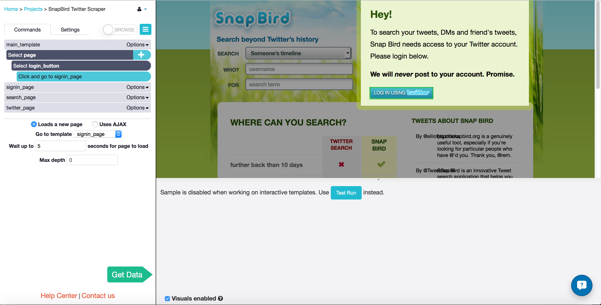
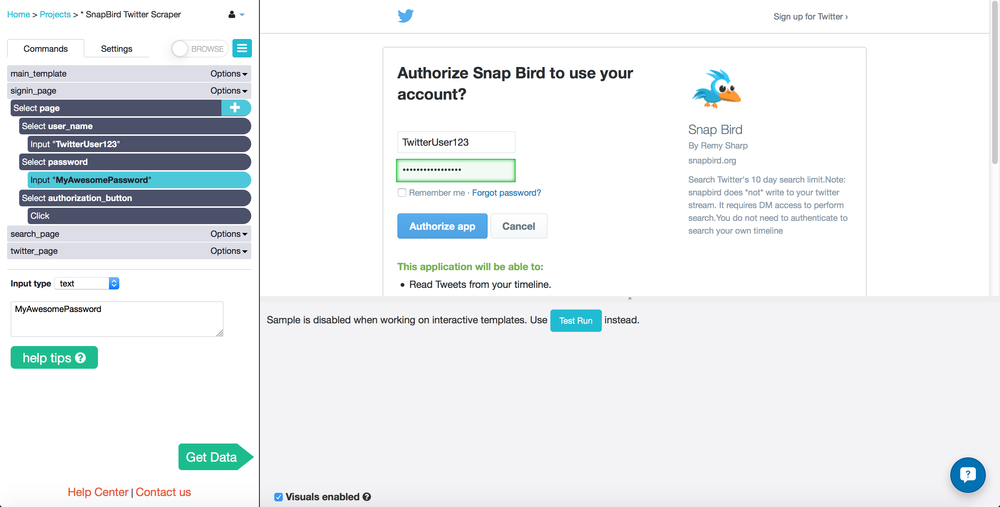
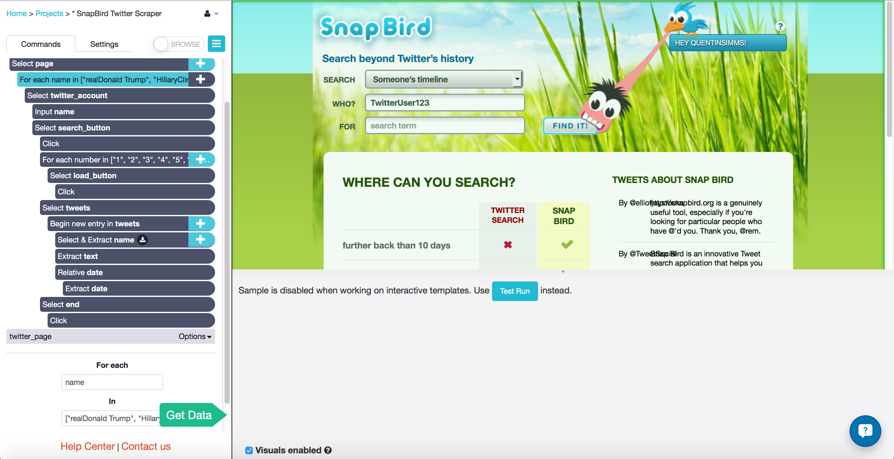
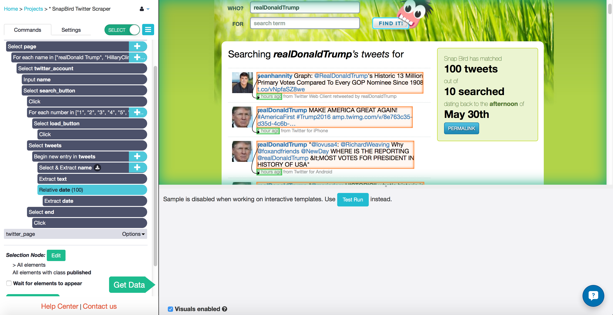
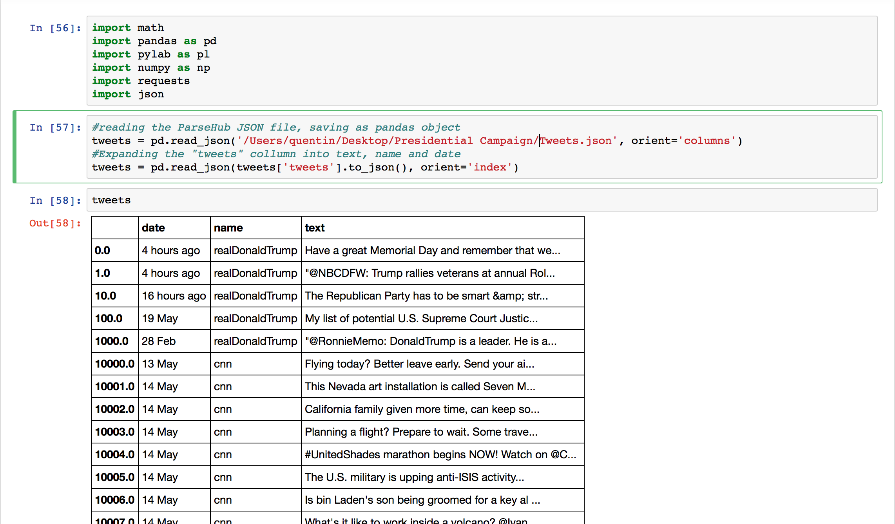
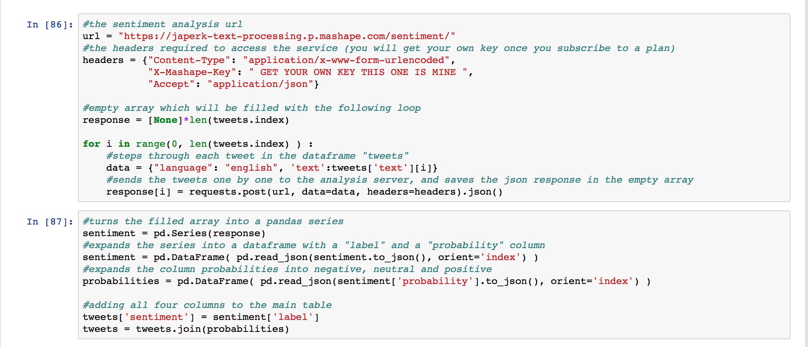
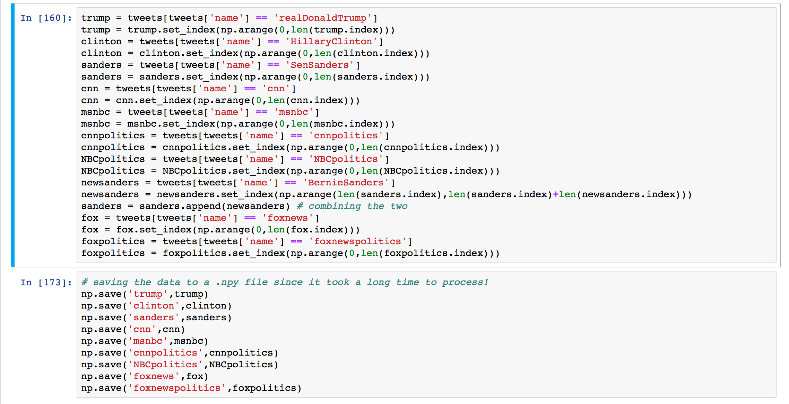
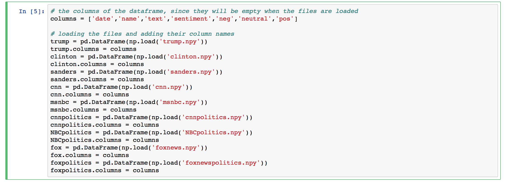
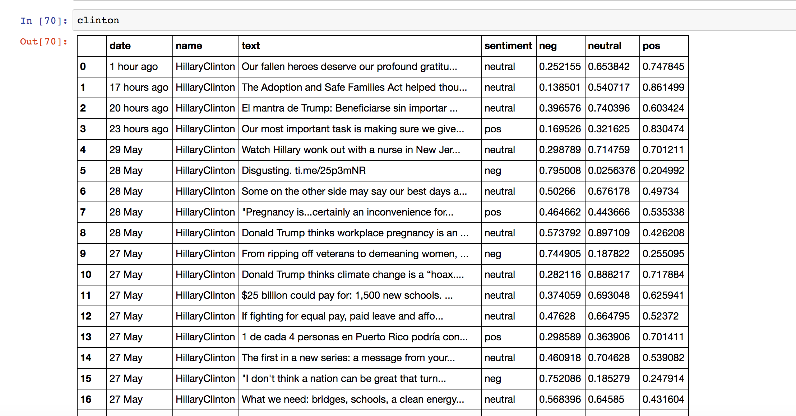

ParseHub can be used in combination with textual analysis tools to collect complex and valuable data from social media sites like twitter.com. In my article about this year's phenomenally popular Presidential Race, I used a sentiment analysis tool from text-processing.com to mine the opinions of 27,000 tweets. You can use this very same process to find out the opinions of your customers. Software companies and consulting firms will charge you thousands of dollars per month to do exactly this.
In this guide I will show you every step in my process of combining ParseHub with a sentiment analysis tool, so that you can start mining the sentiment of responses on social media too.
I used Python to analyze my data. Check out our tutorial on data analysis using iPython notebooks here. Feel free to follow along with whatever your preferred data analysis language is, and let us know about your experience, in the comments below or in an email!
Collecting tweets from snapbird.org with ParseHub
The website I collected the tweets from, snapbird.org, saves just under 3000 latest tweets from twitter accounts whereas twitter.com only lets you see the last 800 or so. Here's how you can also use ParseHub to scrape all 3000 tweets from a given twitter account.
Open Snapbird.org and go to the log in page
- Open to snapbird.org in the ParseHub desktop app and click "Create New Project". Your project will be created, and you will start on the main_template.
- Select the button that says "LOG IN USING TWITTER" in the AJAX pop up window. Rename the selection "login_button".
- Click on the "plus" button next to the "Select page" command to add a new command.
- Choose the Click tool from the pop-up menu. This menu has a variety of tools you will use to handle interactive elements and get data.
- In the pop-up window select "Go to a new template" and create a new template named "signin_page". ParseHub will now open the new page for you.

Use ParseHub to log in with email and password
- You are now in the new template called signin_page. Click on the "Username or email" text input box to select it, and enter your twitter username into the text box.
- Click on the "plus" button on the "Select page" command, and choose the select tool from the menu.
- Click on the "Password" text input box and enter your twitter password.
- Click on the "plus" button on the "Select page" command and choose the select tool again from the menu.
- Select the button that says "Authorize app".
- In the pop-up window select "go to new template" and rename the template "search_page". I told ParseHub that it Uses AJAX, not that it Loads a new page, since there are some funny redirects that happen before you reach the page you want.

Searching for multiple twitter accounts
- You are now back on the snapbird.com home page, in the template search_page. The first thing I do is click the "plus" button and add the Loop command.
- Under "for each" I enter the variable name, and under "in" I enter an array of twitter accounts. This commands ParseHub to make a loop though all of the different twitter accounts that I would like to scrape.
- I select the text box that has my user name in it by default with the Select tool.
- I gave each account name in my list the variable name, so I change the input type from "text" to "expression", and enter name, with no quotation marks.
- Select the search button with the text "Find It!" and tell ParseHub to click it. Since this will not take us to a new page or open an AJAX window, I told ParseHub to "Continue" with the current template. This causes the first 100 tweets to appear on the page.

Extracting data from the tweets
- Still on the template called search_page, I will continually press the "Search for more tweets" button that appears at the bottom of the page.
- I know that each account will have at most 3000 or 3500 tweets, and the button loads 100 at a time, so I add another Loop command.
- The "for each" text box gets the variable number and the "in" text box gets an array of the numbers from 1 to 35.
- Click the "plus" button beside the Loop command and choose the Select tool.
- Select the "Search for more tweets" button.
- Tell ParseHub to click on the button with the Click command, and "Continue" with the same template.
- I hold down the shift key and click on the "plus" button beside the "Select search_button" command to add a new Select command.
- I select all the tweets on the page by clicking on the SPAN of one, and then clicking on one of the others that gets highlighted as well.
- Since there are different kinds of tweets, I checked each tweet on the page to make sure that it was selected.
- Choose the command "Begin a new entry in tweets", and extract the text.
- Using the Relative Selection tool, I selected the dates found under each tweet and extracted those.
- I also selected the name of the account at the very top of the page, where it says "Searching {twitter account}'s tweets for"

After that, I was ready to gather my data! I clicked the ParseHub "Get Data" button, clicked "Run" and waited for the data to collect. Since this was a huge haul of data, I left my project to run overnight.
Importing the JSON data from ParseHub
Before doing anything else, I checked over the CSV that ParseHub gave me just to make sure the information looked the way I wanted it to. I saved the JSON from ParseHub to my Desktop, ready to import into my iPython notebook.

The first thing I did was import all of the libraries I would be needing for my analysis.
import math
import pandas as pd
import pylab as pl
import numpy as np
import requests
import json
Then I imported the JSON file from my desktop using the pandas library read_json. You can see the DataFrame that I got in the picture above.
#reading the ParseHub JSON file, saving as pandas object
tweets = pd.read_json('/Desktop/Tweets.json', orient='columns')
#Expanding the "tweets" column into text, name and date
tweets = pd.read_json(tweets['tweets'].to_json(), orient='index')
Sending the text data to the sentiment analysis tool
Once I signed up for text-processing.com, I got my own X-Mashape-Key from their Mashape documentation. I needed to send this, along with the text that I want analyzed, as an HTTP POST.

I set up an empty pandas DataFrame called response which would fill with the response I got from each HTTP POST.
response = [None]*len(tweets.index)
I looped, one by one, through each tweet in my massive DataFrame, and sent it to the textual analysis URL. Each response I got was a JSON with two elements, the sentiment detected in the tweet (either 'neg', 'neutral', or 'positive') and the likelihood that it had each one of those sentiments (between 0 and 1).
#the sentiment analysis url
url = "https://japerk-text-processing.p.mashape.com/sentiment/"
#the headers required to access the service (you will get your own key once you subscribe to a plan)
headers = {"Content-Type": "application/x-www-form-urlencoded",
"X-Mashape-Key": " YOUR KEY GOES HERE ",
"Accept": "application/json"}
for i in range(0, len(tweets.index) ) :
#steps through each tweet in the dataframe "tweets"
data = {"language": "english", 'text':tweets['text'][i]}
#sends the tweets one by one to the analysis server, and saves the json response in the empty array
response[i] = requests.post(url, data=data, headers=headers).json()
NOTE While my loop was still running, I received a 503 Service Unavailable error which had crashed my code. It seems as though my internet had dropped momentarily and my program had crashed when it was no longer able to reach the server. I was worried about losing my data at first, but then realized that the table response had saved the response of every loop that happened before the crash. So if you see this problem, there is no need to panic. You didn't lose any of your data, you just had to run the code again, remembering to start up the loop from where it left off.
After the loop completed, I started a new code cell to turn response into a pandas series.
sentiment = pd.Series(response)
With to_json, I was able to turn the series into a DataFrame with two columns, one with the sentiment "label" and one with the "probabilities".
sentiment = pd.DataFrame( pd.read_json(sentiment.to_json(), orient='index') )
I read the column "probabilities" to turn it into three separate columns, "neg", "neutral", and "positive".
probabilities = pd.DataFrame( pd.read_json(sentiment['probability'].to_json(), orient='index') )
I joined these columns with the original DataFrame, tweets.
tweets['sentiment'] = sentiment['label']
tweets = tweets.join(probabilities)
Saving the DataFrames
I would recommend saving your data as soon as possible, so that you don't have to wait for a loop to send all those HTTP POSTS each time you close Jupyter Notebooks.
- Split up the data by twitter account,
- Then used numpy's save function to save
each DataFrame as a .npy file in my python directory.

Loading the DataFrames
Load the files you just saved using numpy's load function. You will have to add the columns manually. You will be able to start
your analysis from here!


In the next guide I will go over my entire Python project I made for my
presidential campaign article, showing you some of the different ways that you could analyze the tweets that you scrape from the web. I will show you how I:
- Converted the dates in the "date" column into a format that computers can read
- Counted the number of times that a candidate's name was tweeted per day
- Counted the number of times a candidate tweeted with a certain sentiment
- Plotted the results as
- line graphs with trends over time
- bar graphs
- stacked bar graphs